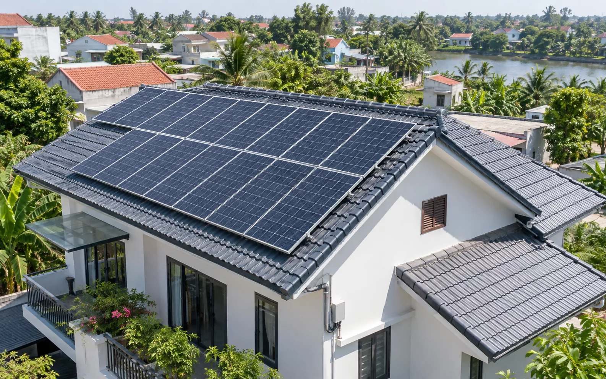
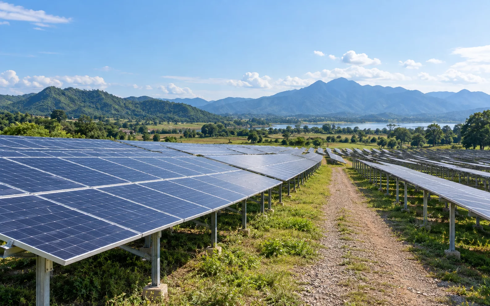
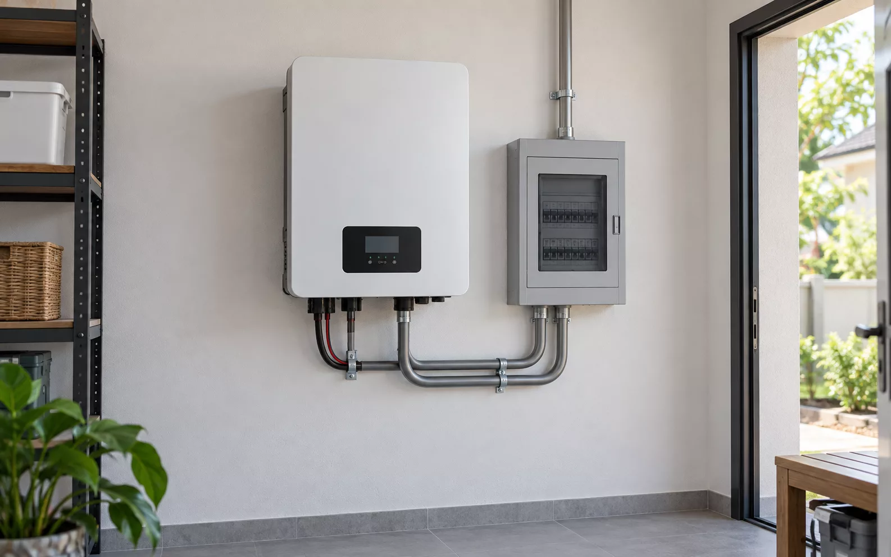

Từ ánh sáng trên mái nhà đến một hệ thống dễ hiểu.
Thay vì chỉ trình bày sản phẩm, hãy dẫn người xem qua một hình ảnh có ý nghĩa, một giải thích rõ ràng và một hành động tiếp theo phù hợp.
Ảnh chạy phía sau header trong suốt; lớp tối giữ nội dung đọc được khi ảnh có vùng sáng phức tạp.
Hình ảnh lớn chưa đủ. Cần một hành trình đọc rõ ràng.
Bấm để đổi loại hình ảnh và bố cục câu chuyện; mở ảnh ở kích thước lớn khi cần. Ảnh trong phòng lab chỉ dùng để xem composition, không được tự ghi nhận là dự án thực tế.
Một mái nhà, một câu chuyện về năng lượng.
Hình ảnh định hướng trước, chi tiết về giải pháp theo sau. Khi là trang thực tế, mọi thông số và hình ảnh công trình phải liên kết nguồn CMS đã xác minh.
Có thể kể cùng một chủ đề bằng nhiều nhịp thị giác.
Ảnh ghép lệch nhịp, dải thông tin kỹ thuật và nội dung văn bản dài được phân nhóm để tránh kiểu một trang chỉ toàn card giống nhau.


Thông tin để quyết định.Mẫu bố cục / không có thông số sản phẩm giả
Architectural editorial, không phải một hàng thẻ card.
Trang Giới thiệu và Dự án có thể thay đổi tỷ lệ ảnh, điểm neo typography và nhịp đọc mà vẫn giữ hệ thống khoảng cách, màu và phân cấp chung.
- Ảnh có nhiệm vụCung cấp bối cảnh, không đóng vai trang trí lấp chỗ trống.
- Chữ có thứ tự ưu tiênMột H1, mục tiêu chính rõ, không sinh thêm nhãn uppercase vô nghĩa.
- Nội dung có điểm kết thúcTừ đọc/hiểu tới chọn sản phẩm hoặc yêu cầu tư vấn trong site thật.
Điểm đặc biệt phải có lý do xuất hiện.
Hero phủ ảnh qua header là một lựa chọn cho section được duyệt. Nó không phải quy tắc áp dụng cho toàn bộ website, càng không phải lý do thay đổi header production một cách tự động.
Full-bleed
Ảnh và header giao nhau, chữ có overlay và safe-area, sticky header chuyển nền khi cuộn. Dùng ở nơi cần điểm nhấn cinematic.
Editorial Split
Hình ảnh và chữ có trọng lượng riêng; phù hợp trang Giới thiệu, Giải pháp, câu chuyện thương hiệu.
Architectural Frame
Ảnh được đóng khung như một trang hồ sơ kỹ thuật. Phù hợp bài công trình, case study và section giới thiệu hệ thống.
Màu ảnh thay đổi, độ đọc vẫn phải được kiểm soát.
Trong kiểu Full-bleed, có thể thử độ đậm của lớp phủ ảnh. Mức thấp là một phần thí nghiệm, không đồng nghĩa đã đáp ứng yêu cầu tương phản cho production.
Thay đổi lớp phủ ở hero phía trên khi đang chọn «Ảnh tràn qua header». Contrast production vẫn cần kiểm tra theo ảnh thực tế.